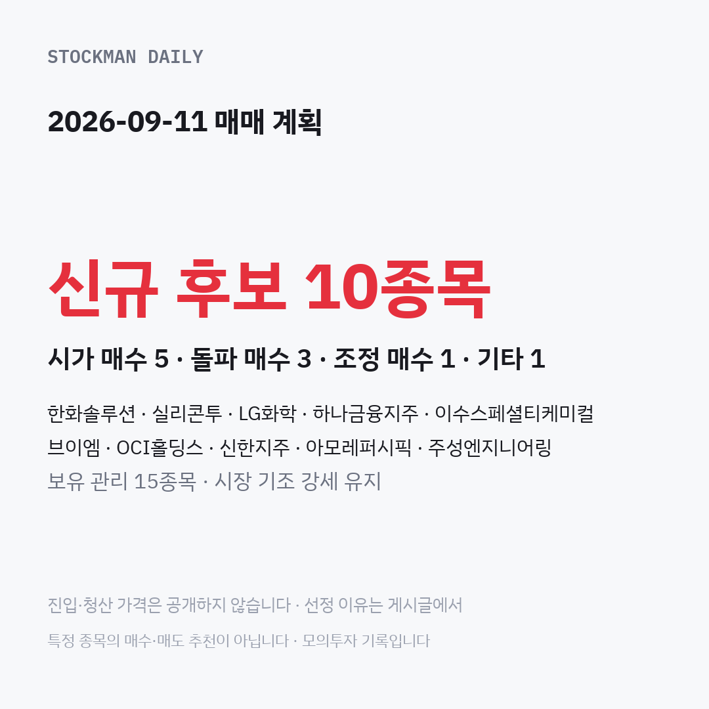

2026-09-11 매매 계획이 준비됐습니다.
신규 후보 10종목 — 시가 매수 5 · 돌파 매수 3 · 조정 매수 1 · 기타 1
- 한화솔루션 (돌파 매수): 거래가 크게 몰린 데다 상승 흐름도 가장 강했던 종목
- 실리콘투 (시가 매수): 최근 며칠 크게 밀린 흐름이 눈에 띄어 후보에 올린 종목
- LG화학 (시가 매수): 오름세와 거래는 좋지만 최근 영업 손실은 부담인 종목
- 하나금융지주 (돌파 매수): 거래가 활발한 은행 계열로 살짝 내려온 자리를 본 종목
- 이수스페셜티케미컬 (시가 매수): 오름세는 좋지만 거래는 후보 중 한산한 소재 종목
- 브이엠 (조정 매수): 제법 밀렸다가 직전 거래일 다시 오른 흐름을 본 종목
- OCI홀딩스 (시가 매수): 오름세가 이어지는 가운데 살짝 내려온 몸집 큰 종목
- 신한지주 (돌파 매수): 거래가 활발한 은행 계열이나 빚 구조는 무거운 편
- 아모레퍼시픽 (시가 매수): 앞서 조건을 아슬하게 못 채워 이번에 다시 올린 종목
- 주성엔지니어링 (기타): 이익을 남기고 판 뒤에도 더 올라 다시 보는 종목
보유 관리 15종목 · 시장 기조 강세 유지
전략 풀이
- 시가 매수: 장이 열리면 그 가격에 그대로 매수하는 기준 진입입니다. 크게 떨어져 시작하는 날만 건너뜁니다.
- 돌파 매수: 전날 가장 높았던 가격을 넘어설 때만 매수하고, 넘지 못하면 그날은 매수하지 않습니다.
- 조정 매수: 전날보다 조금 내려온 가격을 미리 정해 두고, 거기까지 내려와야만 매수합니다.
진입·청산 가격은 공개하지 않습니다. 결과는 청산 복기 영상으로 확인해 주세요.
특정 종목의 매수·매도 추천이 아닙니다 · 모의투자 기록입니다 본 채널은 특정 종목의 매수·매도를 추천하지 않습니다.
진입·청산 가격은 공개하지 않습니다 · 특정 종목의 매수·매도 추천이 아닙니다 · 모의투자 기록입니다